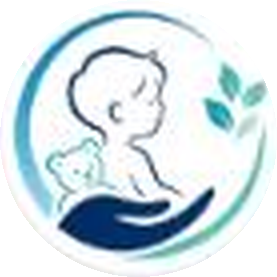
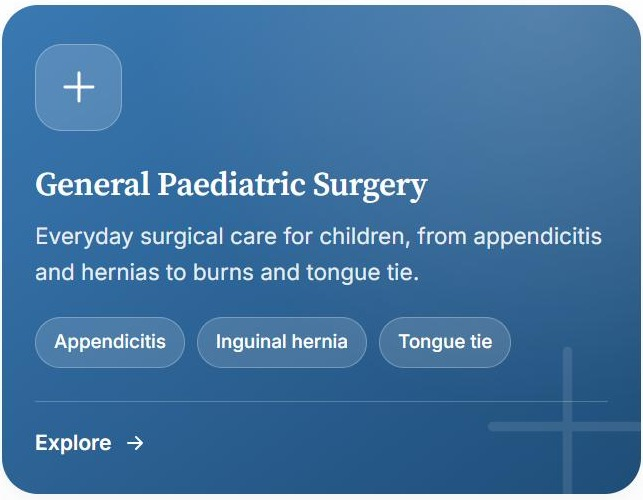

Dr. Muniswaran · Case Study
Consultant Paediatric Surgeon · Kota Kinabalu
Dr. Muniswaran: A Calm, Parent-First Website for a Paediatric Surgeon
A website for Dr. Muniswaran A/L Nadesin, Consultant Paediatric Surgeon in Kota Kinabalu — built to reassure the parent reading it at night, with five clearly organised areas of surgical care, an online appointment request and one-tap WhatsApp.
The brief
A parent searching for a paediatric surgeon is usually anxious and short on time. Dr. Muniswaran is an MMC-registered paediatric surgery specialist (M.D. USM, M.Med. Paediatric Surgery UKM) with admitting privileges at Gleneagles Hospital Kota Kinabalu, and a focus on minimally invasive, keyhole techniques.
The brief was a site with a gentle tone to match his practice — one that explains what he treats in plain language and makes the next step, booking or calling, obvious from the first screen.
Two things the site had to do
Clear, calm and credible
Home, About, Services and Contact pages, with real credentials, hospital affiliation and conference activity stated plainly rather than oversold.
Easy next steps
An appointment request form on the home page, a persistent WhatsApp button, a Call Clinic button and full opening hours.
One website, every screen
A parent may find the clinic on a phone at night, on a tablet in a waiting room or on a desktop at work. The same responsive site presents itself cleanly on all of them.
Tablet
WAITING ROOMMobile
PARENT AT NIGHTGentle surgical care, built around your child.
Book an AppointmentDesktop · Home
FIRST IMPRESSIONDesktop · Services
CONDITIONS NAMED
What the site covers
Five areas of surgical care. General Paediatric Surgery, Neonatal Surgery, Paediatric Urology, Paediatric Laparoscopy and Paediatric Gynaecological Surgery each get a colour-coded card, with real conditions named up front — appendicitis, inguinal hernia and tongue tie; pyloric stenosis, Hirschsprung's disease and anorectal malformation; hypospadias, hydronephrosis and phimosis; and more — so a parent can recognise their child's situation at a glance.
Keyhole care, explained. The home page leads with minimally invasive (laparoscopic) surgery — designed to reduce pain, minimise trauma and help children recover faster — and links straight through to the keyhole services.
A specialist profile that stays factual. The About section lists MMC specialist registration, Gleneagles KK privileges, and his role as a speaker at the MAPS Child Health Symposium on minimally invasive paediatric surgery.
Booking without friction. A short appointment request (parent or guardian name, phone number, reason for visit) sits on the home page itself, alongside a floating WhatsApp button on every screen and the clinic's phone numbers, address (Suite 504, Level 5, Gleneagles Hospital Kota Kinabalu) and weekly hours.